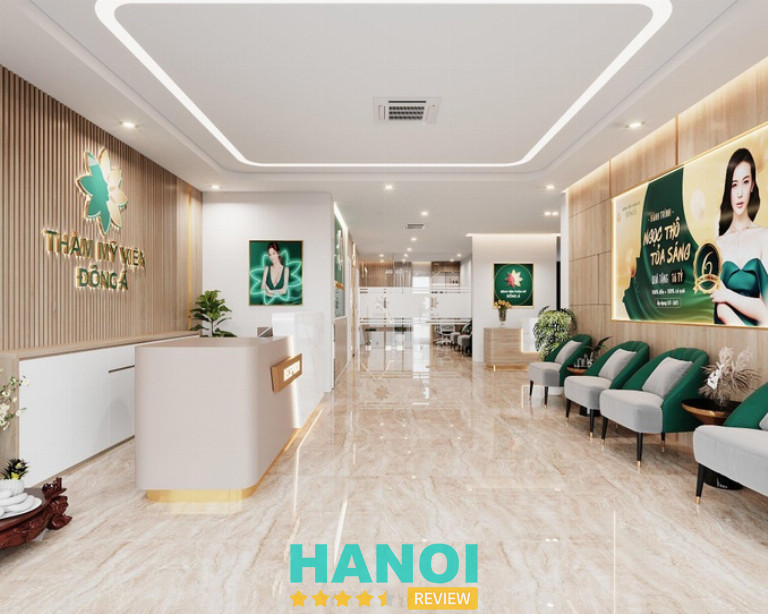
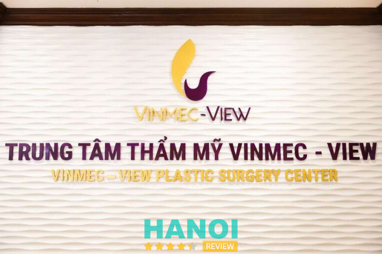
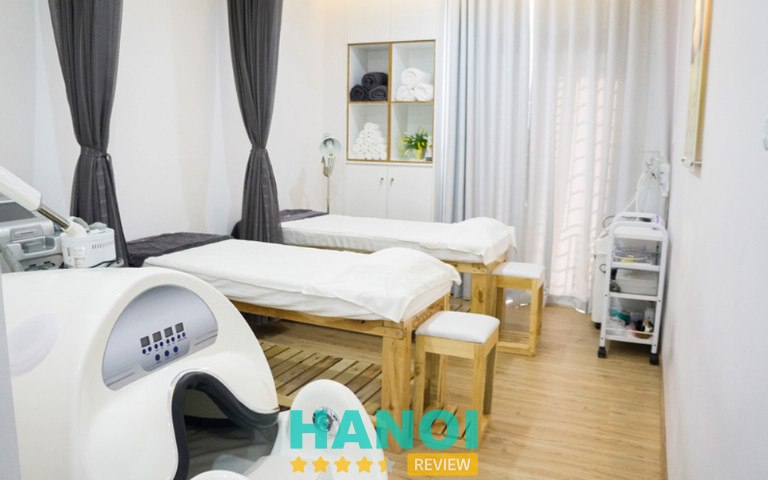
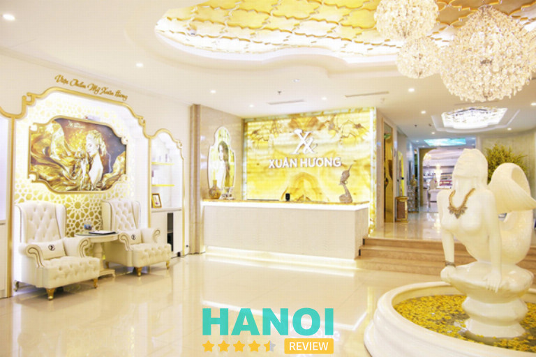

10 Địa chỉ hạ gò má tại Hà Nội đẹp, uy tín và an toàn nhất
Phẫu thuật thẩm mỹ hạ gò má là một thủ thuật phức tạp, nó đòi hỏi quá trình xâm lấn cao. Vì vậy, nếu tiến hành ở những nơi không có đủ điều kiện cơ sở vật chất, tay nghề của các bác sĩ không đảm bảo thì có thể sẽ để lại những biến chứng nguy hiểm. Đặc biệt là khâu vô trùng không được tiến hành cẩn thận có thể gây nhiễm trùng hoặc ngoại tử da.
Top 10 Địa chỉ hạ gò má ở Hà Nội an toàn, cân đối
Gò má cao là khuyết điểm thường gặp ở nữ giới. Mặc dù không ảnh hưởng đến sức khỏe nhưng tình trạng này có thể khiến khuôn mặt kém hài hòa, thiếu cân đối và già nua hơn so với độ tuổi. Hơn nữa, theo quan niệm dân gian, phụ nữ có gò má cao thường lận đận trong tình duyên và kém may mắn trong cuộc sống. Chính vì vậy, nhiều nữ giới quyết định can thiệp hạ gò má để cải thiện ngoại hình và lấy lại sự tự tin trong cuộc sống.
Hiện nay, hạ gò má đang được áp dụng bởi 2 phương pháp là phẫu thuật và tiêm filler. Tùy vào nhu cầu và tình trạng khuyết điểm mà bạn có thể trao đổi cụ thể với bác sĩ về kỹ thuật tiến hành. Cùng HaNoiReview tìm hiểu ngay 10 địa chỉ hạ gò má tại Hà Nội uy tín ngay nhé.
Thẩm mỹ viện Đông Á
Thẩm mỹ viện Đông Á là một trong những địa chỉ làm đẹp uy tín và chất lượng tại Hà Nội. Không những vậy, tính đến nay trung tâm đã sở hữu 8 chi nhánh hoạt động trên các tỉnh thành ở nước ta. Hầu hết đều nhận được những sự đánh giá cao từ phía khách hàng và ngày càng được yêu thích nhiều hơn.

Nơi đây sở hữu hoàn toàn các y bác sĩ được đào tạo chuyên môn bày bản, hầu hết đều có chứng chỉ quốc tế. Do đó, những dịch vụ làm đẹp tại đây luôn thu hút được nhiều khách hàng bởi nó đa dạng và đảm bảo được chất lượng thẩm mỹ lâu dài với thời gian. Có thể nói đây chính là một lựa chọn tối ưu nhất khi bạn đang tìm kiếm một địa chỉ hạ gò má uy tín. Các bác sĩ luôn đảm bảo nó hài hòa với gương mặt của khách hàng và giữ được tự nhiên sau khi thực hiện.
Theo đó, các bác sĩ trực tiếp tiến hành có hơn 25 năm trong nghề, trình độ chuyên môn cao và có khả năng xử lý các rủi ro không mong muốn xảy ra khi thực hiện. Ngoài ra, chi phí thực hiện tại đây còn được đánh giá là hợp lý và có thể hướng đến mọi đối tượng thực hiện. Nếu bạn có nhiều khuyết điểm thì có thể áp dụng thêm các dịch vụ độn thái dương, tạo hình khuôn cằm, cấy tóc, nâng ngực…
Thông tin liên hệ:
- Địa chỉ: 212 Kim Mã, Quận Ba Đình, Hà Nội
- Website: benhvienthammydonga.vn
- Bác sĩ tư vấn (24/7): 1900 6499
- Email: tuvan@benhvienthammydonga.vn
- Di động: 0962 77 88 6
Khoa Phẫu thuật Hàm mặt và Tạo hình – Bệnh viện 108
Khoa Phẫu thuật Hàm mặt và Tạo hình của Bệnh viện 108 là địa chỉ hạ gò má uy tín, an toàn tại Hà Nội. Đơn vị này được thành lập với chức năng chính là xử lý chấn thương vùng hàm mặt và phẫu thuật tạo hình, thẩm mỹ toàn thân. Đây là một số ít những cơ sở y tế công lập cung cấp các dịch vụ phẫu thuật thẩm mỹ ở nước ta. Vì vậy, nếu có nhu cầu hạ gò má, bạn có thể cân nhắc về địa chỉ này.
Khoa Phẫu thuật Hàm mặt và Tạo hình có diện tích rộng, thoáng đãng, được đầu tư về máy móc và thiết bị hiện đại. Bên cạnh đó, đơn vị này còn tham gia trao đổi kinh nghiệm và tiếp nhận chuyển giao các công nghệ thẩm mỹ mới nhằm mang đến cho khách hàng các dịch vụ làm đẹp có chất lượng. Nơi đây còn quy tụ nhiều đội ngũ bác sĩ và chuyên gia giàu kinh nghiệm, tay nghề cao và chuyên môn giỏi.
Các bác sĩ tại đây nhiệt tình và tận tâm với khách hàng. Khách hàng có nhu cầu phẫu thuật hạ gò má sẽ được bác sĩ tư vấn cụ thể về phương pháp thực hiện, chi phí và cách chăm sóc sau phẫu thuật.
Không chỉ chú trọng yếu tố an toàn, đơn vị này còn đặc biệt lưu ý đến yếu tố hài hòa và tự nhiên trong các dịch vụ làm đẹp. Vì vậy, dịch vụ hạ gò má của Khoa Phẫu thuật Hàm mặt và Tạo hình được nhiều khách hàng đánh giá cao, mang lại vẻ đẹp tự nhiên và cân đối.
Thông tin liên hệ:
- Địa chỉ: Số 1 Trần Hưng Đạo, Hai Bà Trưng, Hà Nội.
- Điện thoại: 069 572 400
- Email: bvtuqd108@benhvien108.vn
- Website: benhvien108.vn
Thẩm mỹ Hồng Ngọc
Thẩm mỹ Hồng Ngọc là một trong những sự lựa chọn tuyệt vời nếu bạn đang tìm kiếm một địa chỉ chất lượng để thực hiện hạ gò má. Đây cũng là một trong những đơn vị tạo được tiếng vang với ứng dụng các công nghệ làm đẹp ở Hàn Quốc thành công nhất. Trên thị trường làm đẹp, cái tên này cũng nhận được nhiều sự quan tâm từ phía khách hàng với chất lượng các dịch vụ làm đẹp uy tín.
Không chỉ được biết đến bởi các tín đồ làm đẹp nơi Hà Thành mà còn cả ở các vùng lân cận. Điều này có thể dễ hiểu vì Thẩm mỹ Hồng Ngọc luôn chú trọng trong vấn đề cập nhật mới các máy móc thiết bị hiện đại và tiên tiến, đảm bảo quá trình tiến hành mang tính chính xác cao và thời gian thực hiện cũng nhanh chóng hơn so với những nơi khác.
Các bước tư vấn và thăm khám được tiến hành tư vấn và thực hiện trực tiếp bởi các bác sĩ thẩm mỹ có tay nghề cao và trình độ chuyên môn vững chắc, đảm bảo kết quả có thể mang đến cho bạn sự hài lòng hơn cả mong đợi.
Sau khi tiến hành bạn cũng sẽ được lưu lại đây để theo dõi phản ứng, nếu không có bất kỳ vấn đề nào xảy ra thì bạn có thể về chăm sóc tại nhà, sau khoảng 14 ngày thì quay lại cắt chỉ.
Thông tin liên hệ:
- Địa chỉ: Tầng 5, Số 66 Yên Ninh, Ba Đình, Hà Nội
- Điện thoại: 024 3716 4288
- Điện thoại: 0968 139 085 – 0968 139 095
- Website: thammyhongngoc.com
- Email: thammy@hongngochospital.vn
Đọc thêm 10 Địa chỉ làm hồng nhũ hoa tại Hà Nội uy tín, đẹp tự nhiên.
Bệnh viện thẩm mỹ Kangnam
Mỗi người khi quyết định chăm sóc vẻ đẹp của bản thân thông qua phẫu thuật thẩm mỹ, đều muốn tìm đến một nơi đáng tin cậy, chất lượng và tận tâm. Nếu bạn đang tìm một địa chỉ phẫu thuật hạ gò má ở Hà Nội với những tiêu chí trên, Bệnh viện thẩm mỹ Kangnam chính là lựa chọn hàng đầu.
Tại Kangnam, bạn không chỉ được trải nghiệm một dịch vụ thẩm mỹ chất lượng, mà còn là sự tận tâm và chuyên nghiệp từ bác sĩ chuyên ngành. Họ sẽ thăm khám, tư vấn trực tiếp, giúp bạn chọn ra phương pháp phẫu thuật phù hợp nhất dựa trên tình trạng, mong muốn của mỗi người. Sự cá nhân hóa, chăm chút trong từng bước đi làm cho mỗi ca phẫu thuật đạt hiệu quả tốt nhất.
Trước khi thực hiện bất kỳ ca phẫu thuật nào, Kangnam luôn ưu tiên việc kiểm tra sức khỏe, xét nghiệm một cách kỹ càng. Điều này đảm bảo rằng mỗi khách hàng đều đáp ứng được những tiêu chuẩn cần thiết để tiến hành phẫu thuật an toàn, hiệu quả.
Với thời gian thực hiện nhanh chóng, bạn sẽ được chứng kiến một sự thay đổi tích cực, nhanh chóng, đáng ngạc nhiên trên khuôn mặt của mình. Đội ngũ bác sĩ tại đây không chỉ hùng hậu mà còn có nhiều năm kinh nghiệm, luôn được đào tạo định kỳ, bài bản.
Thông tin liên hệ:
- Địa chỉ: 190A – 190B Trường Chinh, P. Khương Thượng, P. Đống Đa, Hà Nội.
- Điện thoại: 024 7300 6466
- Website: benhvienthammykangnam.vn
Thẩm mỹ Thu Cúc
Thẩm mỹ Thu Cúc là một trong những địa chỉ thẩm mỹ lâu đời nhất tại Hà Nội. Tính đến thời điểm hiện tại, cơ sở này đã có 24 năm hoạt động và phát triển. Tại đây gây dựng được tên tuổi và nhận được sự hài lòng của khách hàng bởi cơ sở vật chất hiện đại, trang thiết bị và máy móc tiên tiến. Và hơn thế nữa, cơ sở này còn có đội ngũ bác sĩ, chuyên gia với nhiều năm kinh nghiệm và tay nghề cao.
Với thế mạnh về các dịch vụ phẫu thuật thẩm mỹ như cắt mí, nâng mũi, nâng ngực,….Hiểu được mong muốn sở hữu gò má cân đối và khuôn mặt hài hòa, Thẩm mỹ Thu Cúc mang đến giải pháp hạ gò má an toàn và tự nhiên cho phái nữ.
Để giảm thiểu rủi ro, cơ sở này không thực hiện hạ gò má cho những đối tượng có nguy cơ cao như phụ nữ đang mang thai, đang trong giai đoạn hành kinh, có vấn đề về tâm lý và mắc các bệnh nội khoa như tim mạch, huyết áp, tiểu đường.
Phẫu thuật được diễn ra trong điều kiện vô trùng, khép kín để đảm bảo an toàn, giảm thiểu tình trạng viêm nhiễm và các biến chứng hậu phẫu.
Thông tin liên hệ:
- Địa chỉ: 1B Yết Kiêu, Hai Bà Trưng, Hà Nội
- Điện thoại: 1900 1920
- Website: thammythucuc.vn
Thẩm mỹ viện Bác sĩ Hà Thanh
Trong số vô vàn các địa chỉ phẫu thuật hạ gò má ở Hà Nội, Thẩm mỹ viện Bác sĩ Hà Thanh đã chiếm lĩnh tình cảm, sự tin tưởng của đông đảo khách hàng nhờ sự chuyên nghiệp, tinh tế, kỹ thuật cao.
Tại Thẩm mỹ viện Bác sĩ Hà Thanh, việc chăm sóc sức khỏe, vẻ đẹp cho khách hàng không chỉ dừng lại ở việc sử dụng công nghệ tiên tiến. Mỗi bước, từ tư vấn cho đến thực hiện, đều được thực hiện dưới bàn tay khéo léo của đội ngũ bác sĩ có chuyên môn cao. Họ không chỉ là những người sở hữu tay nghề vững chắc, mà còn là những chuyên gia thẩm mỹ hiểu rõ nguyên tắc cân đối, hài hòa của khuôn mặt.
Dù là phẫu thuật, nhưng quá trình thực hiện diễn ra nhanh chóng, giảm tối thiểu cảm giác khó chịu. Điểm nổi bật là sau phẫu thuật, không hề để lại sẹo, giúp bệnh nhân có thể yên tâm về vẻ đẹp tự nhiên, không bị ảnh hưởng. Khách hàng sẽ dần hoạt động bình thường sau 1 tuần và sau 1 tháng, mọi cảm giác sưng đau sẽ hoàn toàn biến mất.
Thông tin liên hệ:
- Địa chỉ: 75 Vũ Ngọc Phan, Quận Đống Đa, Hà Nội
- Điện thoại: 0986 222 911
- Email: thammybacsihathanh@gmail.com
- Website: thammybacsihathanh.com
Trung tâm thẩm mỹ Vinmec
Trung tâm thẩm mỹ Vinmec là một phận nằm trong Khoa ngoại tổng hợp của Bệnh viện Đa khoa Quốc tế Vinmec Times City. Chắc hẳn đây là cái tên khá quen thuộc với nhiều người trong thời điểm hiện tại. Nó được biết đến với chất lượng khám, chữa bệnh và làm đẹp tốt nhất do được trang bị đầy đủ hệ thống máy móc thiết bị tiên tiến và hiện đại nhất.

Không những vậy, cơ sở hạ tầng cũng được chú trọng xây dựng để đảm bảo cho khách hàng không gian rộng rãi, thoáng mát và dễ chịu. Đồng thời, chất lượng phục vụ cũng được nhiều người đánh giá cao khi có thể làm hài lòng được hầu hết các khách hàng, kể cả những người khó tính nhất.
Nơi đây luôn đứng đầu trong việc ứng dụng những công nghệ làm đẹp hiện đại và tiên tiến nhất hiện nay để có thể mang đến cho khách hàng những trải nghiệm tốt nhất. Đơn vị còn chú trọng đẩy mạnh trong việc hợp tác Quốc Tế để có thể mang lại kết quả thẩm mỹ chất lượng hơn, từ đó mang đến cho chị em sự tự tin hơn để giao tiếp với mọi người xung quanh.
Thông tin liên hệ:
- Địa chỉ: 458 Minh Khai, Khu đô thị Times City, Hai Bà Trưng, Hà Nội
- Điện thoại: 024 3974 3556
Vyan Beauty Clinic & Spa
Vyan Beauty Clinic & Spa là một trong những địa chỉ hạ gò má được nhiều khách hàng đánh giá uy tín và có chất lượng tốt. Vyan có thế mạnh về chăm sóc và điều trị các vấn đề về da và phẫu thuật thẩm mỹ. Trong đó, hạ gò má là dịch vụ được phái nữ ưa chuộng. Tương tự các cơ sở làm đẹp khác, cơ sở này sử dụng máy siêu âm để cắt xương gò má, rút ngắn thời gian phẫu thuật và giảm mức độ xâm lấn.

Được cộng đồng thẩm mỹ ở Hà Nội đánh giá cao, cơ sở thẩm mỹ này không chỉ thu hút khách hàng bởi uy tín mà còn bởi sự tận tâm, chu đáo. Từ bước đầu tiên khi bạn tìm đến để được tư vấn, bác sĩ chuyên gia sẽ hỗ trợ bạn lựa chọn phương pháp phù hợp nhất. Sự chuyên nghiệp, kinh nghiệm, tâm huyết đều được thể hiện qua từng lời khuyên, từng động tác của bác sĩ.
Khi đến phần thực hiện, chuẩn bị bài bản, môi trường vô trùng cùng việc sử dụng đồ bảo hộ đảm bảo an toàn tuyệt đối cho khách hàng. Một điều đặc biệt và đáng nói ở đây chính là quá trình thực hiện hoàn toàn không đau, không khó chịu. Điều này không chỉ giúp khách hàng cảm thấy thoải mái mà còn nâng cao sự tin tưởng.
Thông tin liên hệ:
- Địa chỉ: 39 Lý Nam Đế, Q. Hoàn Kiếm, Hà Nội.
- Điện thoại: 024 2120 2888
- Email: vyanspa39@gmail.com
- Website: vyan.vn
Viện thẩm mỹ Xuân Hương
Khi nói đến thẩm mỹ, nhiều người thường nghĩ về sự hoàn mỹ, tự nhiên và không để lại dấu vết. Điều này càng trở nên quan trọng khi ta đề cập đến việc cải thiện, làm đẹp cho khuôn mặt – nơi thể hiện đặc trưng, cá tính riêng biệt của mỗi người. Và khi bạn tìm kiếm một địa chỉ phẫu thuật hạ gò má ở Hà Nội uy tín, chất lượng, Viện thẩm mỹ Xuân Hương chắc chắn sẽ là một sự lựa chọn hàng đầu. Đây là nơi có thể giúp cho phái đẹp thỏa mãn cả 2 nhu cầu: chăm sóc sức khỏe và sắc đẹp mà tiết kiệm thời gian.

Những lý do mà bạn nên trải nghiệm sử dụng dịch vụ tại Viện thẩm mỹ Xuân Hương:
- Đội ngũ bác sĩ, nhân viên chuyên nghiệp.
- Cơ sở vật chất hiện đại, công nghệ tiên tiến.
- Luôn nâng cao trải nghiệm của khách hàng.
Các phương pháp tại cơ sở này được nghiên cứu tối ưu nên thời gian thực hiện ngắn, không đau đớn và không cần chăm sóc, nghỉ ngơi. Trong suốt thời gian điều trị, phái đẹp hoàn toàn an tâm vì được đồng hành cùng những bác sĩ chuyên khoa thẩm mỹ chuyên môn, kinh nghiệm.
Thông tin liên hệ:
- Địa chỉ: 22 Triệu Việt Vương, Hai Bà Trưng, Hà Nội
- Điện thoại: 1800 6999
- Fanpgae: FB.com/ThamMyXuanHuong
- Email: thammyvienxuanhuong@gmail.com
- Website: thammyvienxuanhuong.com
Thẩm mỹ Beauty Center By Tấm
Nếu bạn đang tìm kiếm địa chỉ phẫu thuật hạ gò má tại Hà Nội thì không thể bỏ qua cái tên Thẩm mỹ Beauty Center by Tấm. Cơ sở đã có hơn 10 năm phát triển, tạo được chỗ đứng trên thị trường nhờ vào tay nghề bác sĩ, cơ sở vật chất hiện đại, dịch vụ chất lượng.
Chất lượng và sự hài lòng của khách hàng luôn là tiêu chí hàng đầu cho mọi hoạt động tại Thẩm mỹ viện Tấm. Mang trong mình một định hướng, một tầm nhìn và sứ mệnh phát triển bền vững để trở thành một hệ thống thẩm mỹ chuyên nghiệp, uy tín và chất lượng xuất sắc nhất về tay nghề, kinh nghiệm của Bác sĩ cũng như đầu tư cơ sở vật chất, trang thiết bị sánh ngang với các Viện thẩm mỹ hàng đầu trong khu vực.
Bên cạnh thế mạnh về phẫu thuật thẩm mỹ, tại Thẩm mỹ viện Tấm còn có dịch vụ về nha khoa để cải thiện nụ cười cũng như tình trạng sức khỏe răng miệng cho khách hàng như: dán sứ veneer, bọc răng sứ, niềng răng, nhổ răng….
Thông tin liên hệ:
- Địa chỉ: Tôn Đức Thắng, Đống Đa, Hà Nội.
- Điện thoại: 09666.605.600
- Email: Marketing.tambeauty@gmai.com
- Fanpage: FB.com/thammybeautycenterbytam
- Website: thammyvientam.com
3 lưu ý sau khi phẫu thuật hạ gò má ở Hà Nội
Vì mỗi người có một cấu trúc khuôn mặt và mức độ phục hồi khác nhau nên quá trình chăm sóc sau phẫu thuật hạ gò má là rất quan trọng để đạt được kết quả thẩm mỹ như mong muốn. Dưới đây là các lưu ý mà bạn cần nắm sau khi tiến hành phẫu thuật hạ gò má:
- Vệ sinh vết thương: nên vệ sinh bằng nước muối để tránh tình trạng nhiễm trùng. Thực hiện 2 lần trong 1 ngày vào buổi sáng và buổi tối để cải thiện được triệt để.
- Giảm sưng đau: chườm lạnh theo chỉ dẫn của bác sĩ sẽ giúp làm dịu cơn đau, khuôn mặt bớt sưng nề và chống viêm hiệu quả. Nên dùng thuốc giảm đau hay giảm sưng theo chỉ định của bác sĩ.
- Chế độ dinh dưỡng: tránh cử động hàm – miệng – má; ănn các món mềm, nhuyễn, loãng; tuyệt đối không ăn đồ cứng, dai, khô,…; tránh ăn các thực phẩm gây sẹo, phù nề như: Trứng, thịt gà, thịt bò, đồ nếp, rau muống, cá mè… và không sử dụng các chất kích thích như: Thuốc lá, rượu bia, cafe…; uống đủ 2 lít nước trong 1 ngày và đi kèm chế độ bổ sung vitamin.
Hạ gò má có nhanh lành hay cải thiện triệt để là nhờ cách chăm sóc, địa chỉ thực hiện và bác sĩ thẩm mỹ mà bạn lựa chọn. Để tránh biến chứng xảy ra và nâng cao hiệu quả làm đẹp, bạn nên tìm hiểu kỹ lưỡng về các thông tin liên quan đến dịch vụ hạ gò má, chọn cơ sở thẩm mỹ uy tín trước khi quyết định làm đẹp. Hà Nội Review hi vọng đã gợi ý được bạn các địa chỉ hạ gò má tại Hà Nội uy tín ngay khi có nhu cầu tìm hiểu về phẫu thuật hạ gò má.
Có thể bạn quan tâm
- 10 Địa chỉ nâng ngực tại Hà Nội đẹp, uy tín, an toàn nhất.
- 5 Bệnh viện có dịch vụ chuyên khoa Mắt tại Hà Nội tốt nhất
- 10 Địa chỉ cắt mí mắt tại Hà Nội uy tín, dịch vụ tốt, giá rẻ
- 10 Địa chỉ triệt lông tại Hà Nội vĩnh viễn không mọc lại
DOANH NGHIỆP: Đăng tải thông tin MIỄN PHÍ.
Tin đọc nhiều


10 Bác sĩ phẫu thuật thẩm mỹ tại Hà Nội giỏi, mát tay nhất
Hiện nay, nhu cầu tìm kiếm các bác sĩ phẫu thuật thẩm mỹ giỏi tại Hà Nội đang đang nhiều người quan tâm. Để giúp...

11 Địa chỉ chăm sóc da mặt tại Hà Nội giá tốt, dịch vụ xịn
Tình trạng da ngày càng xuống cấp nên bạn đang tìm kiếm một địa chỉ chăm sóc da mặt tại Hà Nội để tân trang...

5 Địa chỉ cấy tóc tại Hà Nội chuyên nghiệp, uy tín, giá tốt
Các địa chỉ cấy tóc tại Hà Nội đang là từ khóa được tìm kiếm bởi những khách hàng muốn cải thiện vấn đề tóc...
5 Địa chỉ lấy mỡ bọng mắt tại Hà Nội chuyên nghiệp, hiệu quả
Bạn đang tìm những địa chỉ lấy bọng mắt chuyên nghiệp, uy tín tại Hà Nội. Nhưng đang phân vân không biết cơ sở nào...

Trở thành người đầu tiên bình luận cho bài viết này!